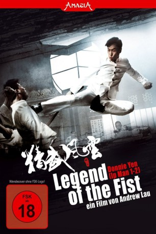
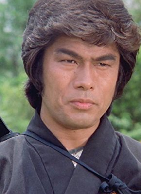

#2400 Legend of the Fist
 
 IMDB-Wertung: 6.3 / 10
IMDB-Wertung: 6.3 / 10  Metascore: 49
Metascore: 49 
Shanghai 1925: Die japanischen Besatzer kontrollieren mit brutaler Härte den nördlichen Bezirk der pulsierenden Weltstadt, um heimlich ihre anstehende Invasion vorzubereiten. Dort liegt der glamouröse Nachtclub Casablanca, ein Treffpunkt für die chinesischen Triaden, hochrangige japanische Offiziere und internationale Spione. Mitten im Geschehen: Kung-Fu-Kämpfer Chen Zhen, der inkognito in seine Heimatstadt zurückgekehrt ist. Vor vielen Jahren rächte er den blutigen Mord an seinem Meister und floh danach ins Ausland. Als maskierter Widerstandskämpfer versucht er den Japanern Einhalt zu gebieten. Die Lage spitzt sich zu, als eine Todesliste mit unliebsamen Regimegegnern veröffentlicht wird und Chen Zhen vom unbarmherzigen japanischen Oberst Chikaraishi herausgefordert wird.
Jahr: 2010
Dauer: 106 Minuten
FSK: 18
Land: Hong-Kong Studio: Splendid FilmTonspuren:
Untertitel:
Auflösung: 1080p (1920x816) Größe: 6492 MB
Genre: Action, Drama, Geschichte
Regisseur: Wai-Keung Lau
Drehbuch: Gordon Chan, Chi-Sing Cheung, Koon-Nam Lui, Frankie Tam
Soundtrack: Kwong Wing Chan
Darsteller:
 Donnie Yen als Chen Zhen
Donnie Yen als Chen Zhen Qi Shu als Fang Qing
Qi Shu als Fang Qing Anthony Chau-Sang Wong als Liu Yutian
Anthony Chau-Sang Wong als Liu Yutian- Bo Huang als Inspector Huang Hao Long
- Siyan Huo als Vivian
 Shawn Yue als General Zeng
Shawn Yue als General Zeng- Karl Dominik als Vincent
- Ryu Kohata als Colonel Takeshi Chikaraishi
- Zhou Yang als Qi Zhi-Shan
-  Yasuaki Kurata als Tsuyoshi Chikaraishi
- Akira als Sasaki Chikaraishi
- Yue Ma als General Zhou
- Jiajia Chen als Huang Lan
- Songwen Zhang als Wen-Zai
- Ikki Funaki als
- Gregory Wong als
- Tian Gao als
- Xi Lai als
- Chi Miao als
- Xiaolei Huang als
- Zhang Huei als
- Xia Yi-Yao als
- Minowa Yasufumi als
- Su Ma als General Zhou's Wife
- Jessie Zhou Hong als Concubine
- Shan-Shan Hu als
- Wang Feng als
- Huai-Yu Zhang als
- Liu Tao als
- Huang Chen als
- Zhi-Hong Zhang als
- Yu Mu-Zi als
- Shi Feng als
 Tony Ho als
Tony Ho als - Wong San als
- Jan-To Tam als Fighter in dojo
- Kenji Tanigaki als Gangster / Fighter in dojo
- Lau Tou als
- Chris Tsui als Chris
- Yale Varty als American Soldier
- Zhou Wang als
- Li Xiao-Lin als Qiu Ting
- Hua Yan als Fighter in dojo
Datei: X:\FSK18-Eastern\Legend of the Fist (2010, FSK18, 1920x816).mkv seit 05.11.2015
Festplatte: FSK18
 Es gibt insgesamt 102 Filme in der Gruppe 'FSK18-Eastern'
Es gibt insgesamt 102 Filme in der Gruppe 'FSK18-Eastern'